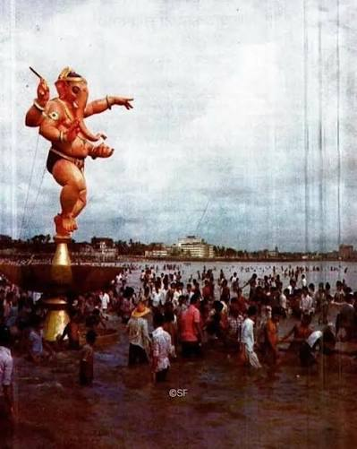

What the photograph shows
At the centre of a crowded beach scene, Ganesh balances on one foot above a tall ceremonial lamp. The lamp and its position beneath the raised idol make this frame useful for comparing the scene to the mandal's dated artwork. The small ©SF mark may help trace the source of the image, but the copy carries no date or named photographer.

Why the year remains open
The mandal's current gallery places the flute-playing form in 1982 and the lamp form in 1983. The 1983 entry is digitally treated artwork showing the same lamp motif. A separate immersion image on Pinterest depicts the flute-playing form and carries a 1982 label. That label supports the sequence as a lead, with its original caption and photographer still to be traced. Mandal gallery · Flute image source
In 2010, My Lord Ganesha assigned the flute-playing form to 1983. A 2026 fan carousel also labels the flute 1983 and labels the lamp design 1982. The captions therefore disagree about both forms, and neither source provides the original print for the immersion photograph shown here. 2010 historical post · 2026 historical carousel
We use 1983 as the working attribution for the lamp form, following the mandal's sequence. The match helps identify the design. Establishing the photograph's year would require a dated original print, a contemporary publication, or a photographer's record.